RoDX (Romanian Drug Explorer)
Cuprins
- Autori
- 1. Introducere
- 2. Descriere Generală
- 3. Interfețele aplicației
- 3.1 Interfața utilizatorului
- 3.1.1 Bara de navigație
- 3.1.2 Pagina de autentificare
- 3.1.3 Pagina de înregistrare
- 3.1.4 Pagina de trimitere email pentru resetarea parolei
- 3.1.5 Pagina de resetarea parolei
- 3.1.6 Pagina de acasă
- 3.1.7 Pagina de căutare și filtrare
- 3.1.8 Pagina cu informații despre droguri
- 3.1.9 Pagina de campanii
- 3.1.10 Pagina About
- 3.1.11 Pagina MyAccount
- 3.1.11 Pagina 404 Not Found
- 3.2 Interfața Hardware
- 3.3 Interfața Software
- 3.4 Interfața de comunicare
- 3.1 Interfața utilizatorului
- 4. Caracteristici ale sistemului
- 5.Funcționalități pentru protecție și securitate
1. Introducere
1.1 Scop
RoDX (Roumanian Drug Explorer) este o aplicație web dezvoltată de studenții menționați în secțiunea de Autori de la Facultatea de Informatică a Universității Alexandru Ioan Cuza. Scopul acestui document este acela de a prezenta o descriere detaliată a funcționalităților,precum și de specifica cerințele aplicației web.Această aplicație va oferi utilizatorilor posibilitatea de a genera și exporta statistici referitoare la situația drogurilor din România.
1.2 Convenția documentului
- Acest document urmează șablonul de documentație a cerințelor software conform IEEE Software Requirements Specification.
- Textul îngroșat este folosit pentru a defini noțiuni personalizate sau pentru a accentua concepte importante.
1.3 Publicul țintă
Acest document este destinat profesorilor, studenților sau dezvoltatorilor, însă orice utilizator, indiferent de cunoștințele lor tehnologice, poate consulta secțiunile de Interfeța utilizatorului și Caracteristici ale sistemului pentru a obține o mai bună înțelegere a ceea ce oferă aplicația.
1.4 Scopul Produsului
Scopul aplicației este acela de a oferi utilizatorilor informații despre situația drogurilor din România.Utilizatorii pot vizualiza grafic informații legate de situația drogurilor din România și să exporte aceste informații în diferite formate (PNG,SVG,CSV), dar și să vizualizeze campanii de prevenire pentru consumul de droguri .De asemenea, utilizatorii își pot crea un cont pentru a beneficia de restul funcționalităților RoDX. RoDX este un proiect educațional dezvoltat pentru materia Tehnologii Web.
1.5 Bibliografie
- Buraga Sabin-Corneliu, Site-ul Tehnologii Web, FII UAIC.
- H Rick. IEEE-Template. GitHub
- Berjon Robin. Ballesteros Sebastien. What is Scholarly HTML?
- https://aws.amazon.com/sdk-for-javascript/
2. Descriere Generală
2.1 Perspectiva produsului
RoDX (Roumanian Drug Explorer) este o aplicație dezvoltată în cadrul cursului de Tehnologii Web, menită să ofere date despre situația statistică a drogurilor din România, dar și informații tehnice despre acestea.
2.2 Funcționalitățile produsului
Fiecare utilizator va avea acces la urmatoarele funcționălități.- Să se înregistreze pe site.
- Să se autentifice pe site.
- Să-și reseteze parola in caz că a uitat-o.
- Să-și modifice credențialele contului dacă este autentificat.
- Să genereze diagrame bazate pe informații legate de situația drogurilor din România pe trei categorii infracțiuni, confiscări și urgențe medicale .
- Să-și salveze filtrele favorite in contul său dacă este autentificat.
- Să vizualizeze informații despre campaniile de prevenire a drogurilor, dar și informații despre diverse. droguri.
- Să exporte aceste diagrame in format PNG,SVG,CSV.
- Dacă utilizatorul are rol de admin, acesta poate șterge utilizatori din baza de date.
- Dacă utilizatorul are rol de admin, acesta poate să adauge campanii de prevenire a drogurilor, dar și să le elimine din baza de date.

Diagramele useCase reprezintă interacțiunile dintre pagini ilustrând funcționalitățile de care beneficiază fiecare utilizator.În prima diagram sunt ilustrate funcționalitățile pe care le are un utilizator care nu deține un cont.În a doua diagramă sunt ilustrate funcționalitățile pe care le are un utilizator care deține un cont.Iar în a treia diagramă sunt ilustrate funcționalitățile la care are acces un utilizator care deține un rol de admin.
2.3 Clase și caracteristici ale utilizatorilor
2.3.1 Utilizator principal
- Utilizatorii care sunt autentificați pot fii:
-
- Orice categorie de oameni care doresc să afle informații despre statistica drogurilor, dar și informații despre acestea.
- Specialiști care se ocupă de analiza statisticii drogurilor din România.
- Utilizatori care nu sunt autentificați
2.3.2 Caracteristici
- Utilizatorii care sunt autentificați pot să-și salveze statististicile de care sunt interesați, atât prin intermediul contului lor de utilizator, cât și în diferite formate cum ar fii PNG,SVG,CSV.
- Utilizatorii care nu sunt autentificați pot să vizualizeze informațiile despre statisticile despre droguri, dar în schimb aceștia nu au posibilitatea să salveze filtrele într-un cont. De asemenea, aceștia pot să se înregistreze ca și utilizator și să beneficieze pe deplin de toate funcționalitățile.
2.4 Mediul de operare
Produsul dezvoltat poate fi utilizat pe orice dispozitiv cu un browser web care suportă HTML5, CSS și JavaScript.
2.5 Documentația pentru utilizator
Utilizatorii pot consulta acest document pentru explicații detaliate despre funcționalitățile aplicației web.
3. Interfețele aplicației
3.1 Interfața utilizatorului
Iată o prezentare generală a fiecărei pagini a aplicației și funcționalităților pe care le oferă:-
- Aceasta reprezintă meniul de navigare către fiecare pagina a aplicației.
- 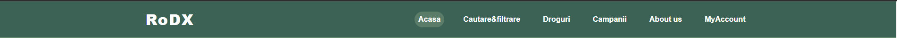
- Pagina de autentificare
-
- Pagina aceasta are rolul de a realiza autentificare utilizatorilor la toate funcționalitățil RoDx.
- Pentru a se autentifica utilizatorul trebuie să completeze câmpurile de email și parolă corect.
- În caz că utilizatorul nu are cont pe site acesta poate să-și creeze unul accesând pagina de înregistrare apăsând pe butonul de Register.
- În caz că utilizatorul și-a uitat parola acesta poate să și-o reseteze selectând opțiunea de Ați uitat parola?
- 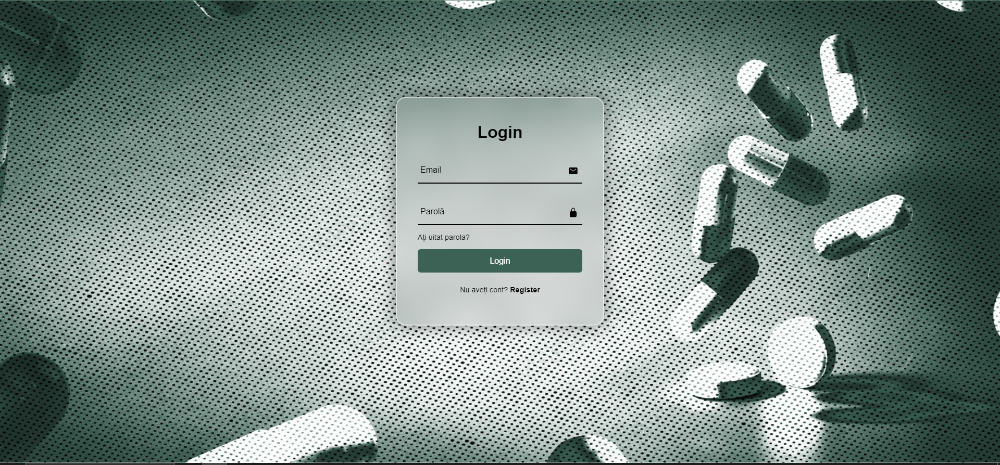
- Pagina de înregistrare
-
- Pagina aceasta oferă funcționalitatea de înregistrare utilizatorilor, ca să beneficieze de toate funcționalitățile RoDX.
- Pentru a se înregistra utilizatorul trebuie să completeze câmpurile Nume de utilizator, Email, Parolă și Confirmați parola.De asemenea câmpurile Nume de utilizator și Email trebuie să fie unice.
- În caz că utilizatorul nu dorește să-și creeze un cont sau are deja un cont acesta poate să revină la pagina de autentificare apăsând pe butonul de Login care se află în partea de jos a paginii.
- 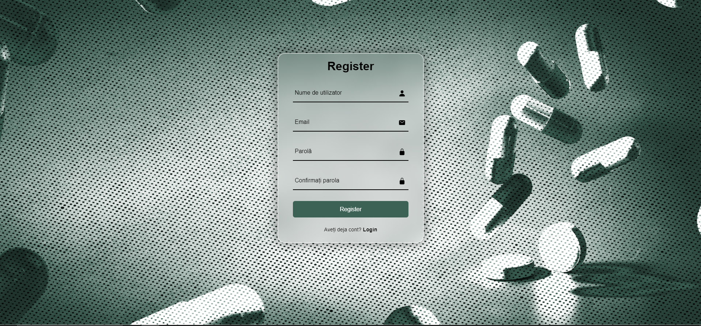
- Pagina de trimitere email pentru resetarea parolei.
-
- Pagina aceasta are rolul de a trimite un email care conține un link care redirecționează utilizatorul către o pagina în care își va introduce noua parolă.La apăsarea butonului de Trimite Email utilizatorul va fi redirecționat către pagina de autentificare.
- 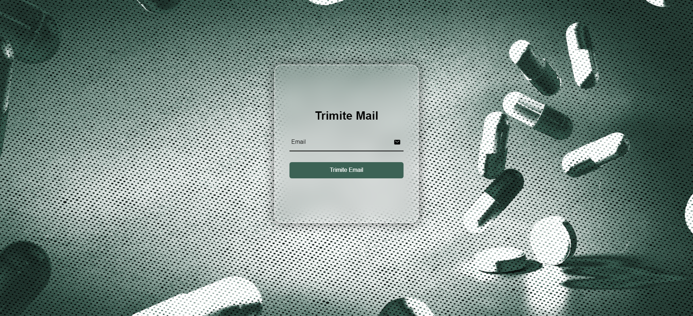
- Pagina de resetare a parolei
-
- Pagina aceasta are rolul de a reseta parola utilizatorului.În momentul în care utilizatorul completează câmpurile Parolă și Confirmare Parolă corect, la momentul apăsării butonului Schimbă Parola, parola acestuia va fi modificată și va fi redirecționat către pagina de autentificare.
- 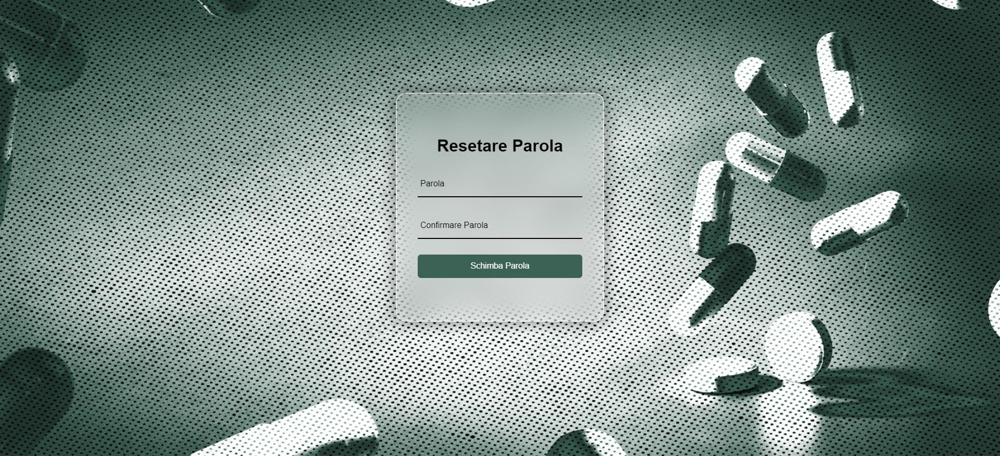
- Pagina aceasta are rolul de a face o scurtă introducere a aplicației RoDx.
- 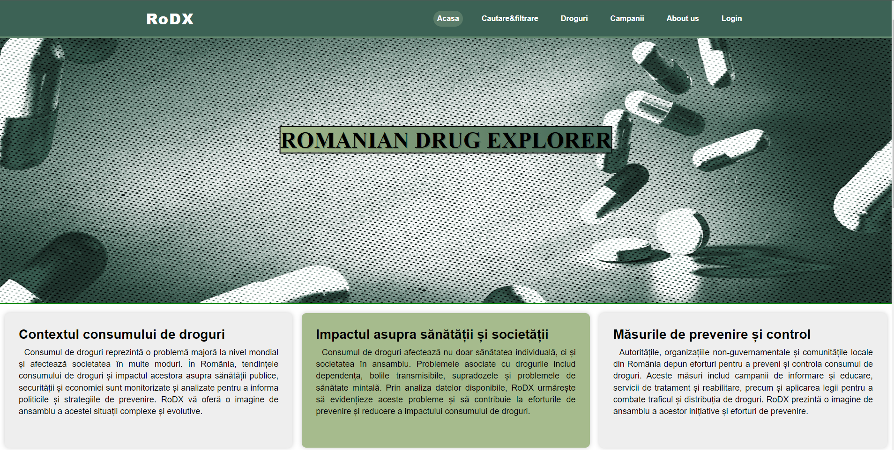 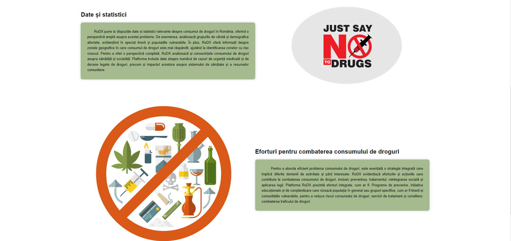
- Pagina aceasta are scopul de a ilustra grafic statisticile despre situația drogurilor din România.
- În momentul în care un utilizator selectează un Tip, acestuia îi sunt generate 3 categorii de filtre, Infracțiuni, Confiscări și Urgențe medicale.
- După ce una distre aceste 3 categorii este selectă ne sunt generate mai multe câmpuri care reprezintă sub-categorii a categoriei principale, pe care utilizatorul le poate completa după nevoile sale
- După ce utilizatorul a completat toate campurile, acesta are posibilitatea de a alege din 3 metode de reprezentare grafică Bar, Pie și Line
- La final după apasarea butonului Caută, pe ecran sunt afișate următoarele componente, diagrama care conține informații bazate pe filtrele selectate de utilizator, și butoanele Preferate care are rolul de a salva combinația de filtre în contul utilizatorului, în secțiunea History din pagina MyAccount și butonul Export care are rolul de exporta diagramele în 3 formate, PNG, SVG și CSV.
- 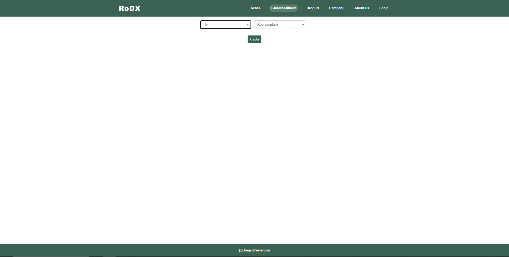
- 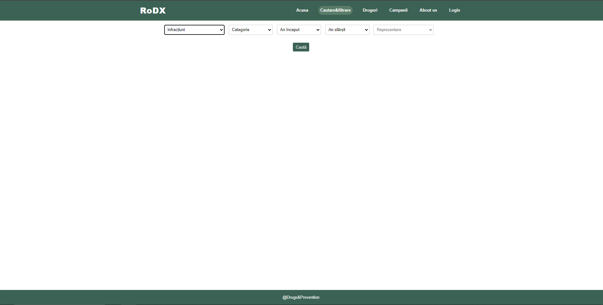

- Pagina aceasta are rolul de oferii informații despre diferite tipuri de droguri.
- La apăsarea butonului Read more care se află sub articolul corespondent fiecărui de tip de drog, utilizatorul este redirecționat către o pagină care furnizeaza informații detaliate despre drogul respectiv.
- 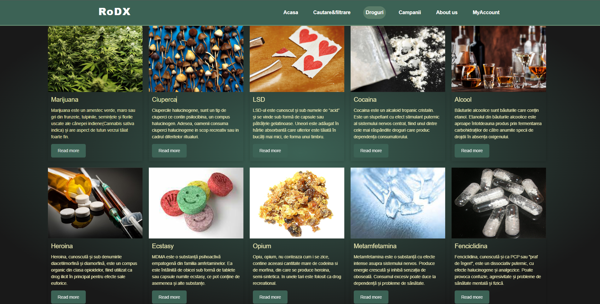
- Pagina aceasta are rolul de oferii informații despre diferite campanii de prevenire a consumului de droguri.
- La apăsarea butonului Read more care se află sub articolul corespondent fiecărei campanii, acestuia îi este ilustrat un modal care conține mai multe informații despre campania respectivă.
- 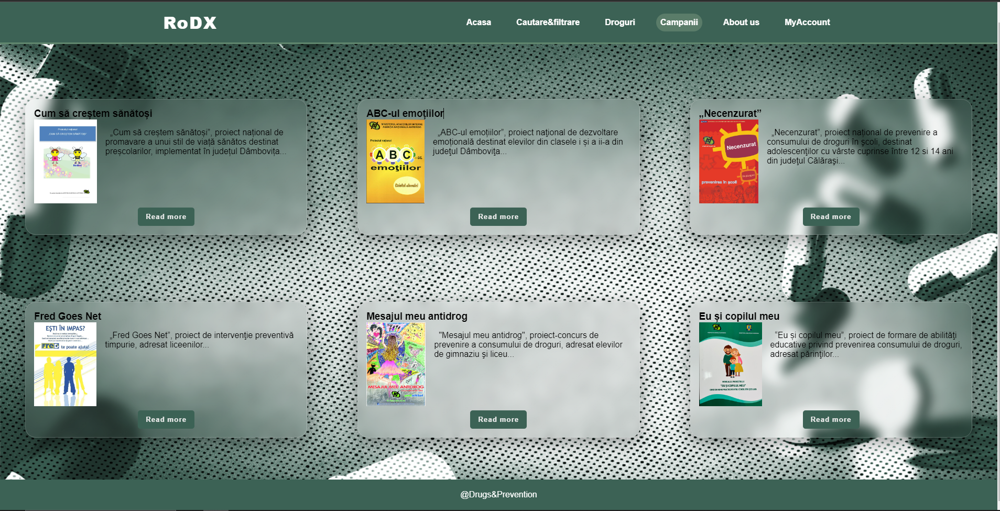
- 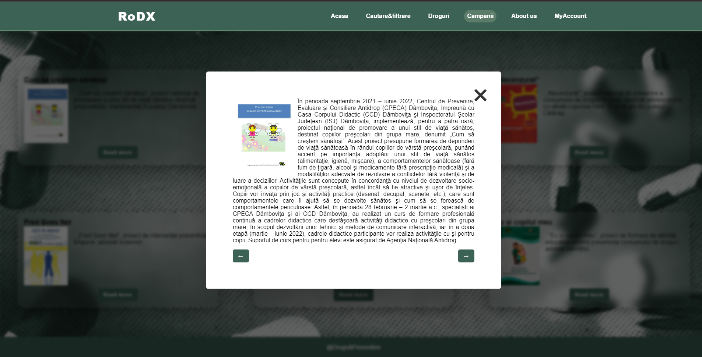
- Pagina aceasta are rolul de oferii informații despre creatorii site-ului RoDX.
- Pagina aceasta are 2 moduri de afișare, cel de utilizator și cel de admin. 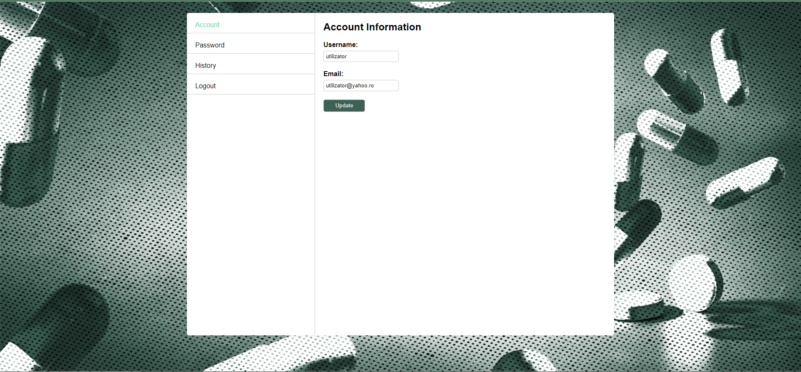
- 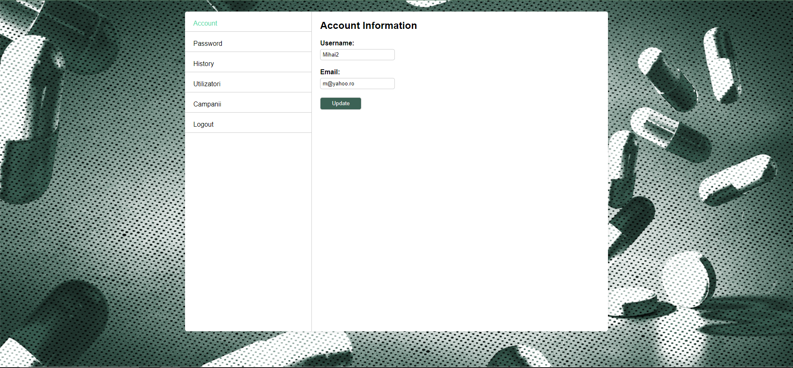
- Secțiunea Account, în care utilizatorul poate să-și modifice Username-ul, Email-ul, eventual amândouă la apăsarea butonului Update.Acesta nu are voie să folosească credențiale care există deja în baza de date.
- Secțiunea Password, în care utilizatorul poate să-și modifice parola la apăsarea butonului Update, cu condiția ca câmpul Old Password să fie completat cu parola cu care utilizatorul s-a conectat și campurile New Password și Confirm New Password să fie identic completate.
- 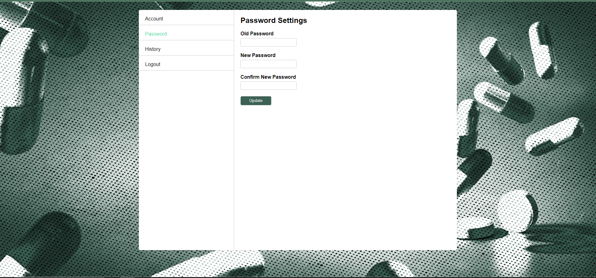
- Secțiunea History, în care utilizatorul poate să-și vizualize filtrele pe care le-a ales ca fiind preferate în urma selectării butonului Preferate din cadrul paginii Căutare și filtrare.De asemenea, acesta are posibilitatea de a elimina filtre din History dacă dorește, prin apăsarea butonului de ștergere din dreptul fiecărui filtru.
- 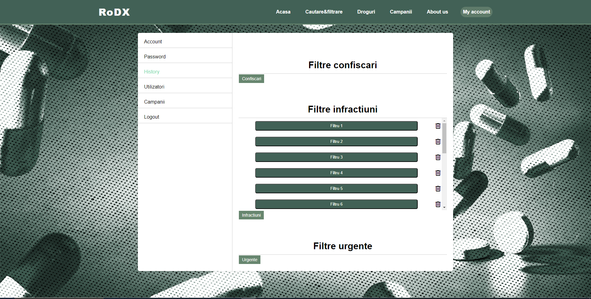
- Secțiunea Utilizatori este destinată adminului, și aceasta îi oferă posibilitatea de a vizualiza o listă cu toți utilizatorii din baza de date.De asemenea, acesta are posibilitatea de a elimina utilizatori din baza de date dacă dorește.
- 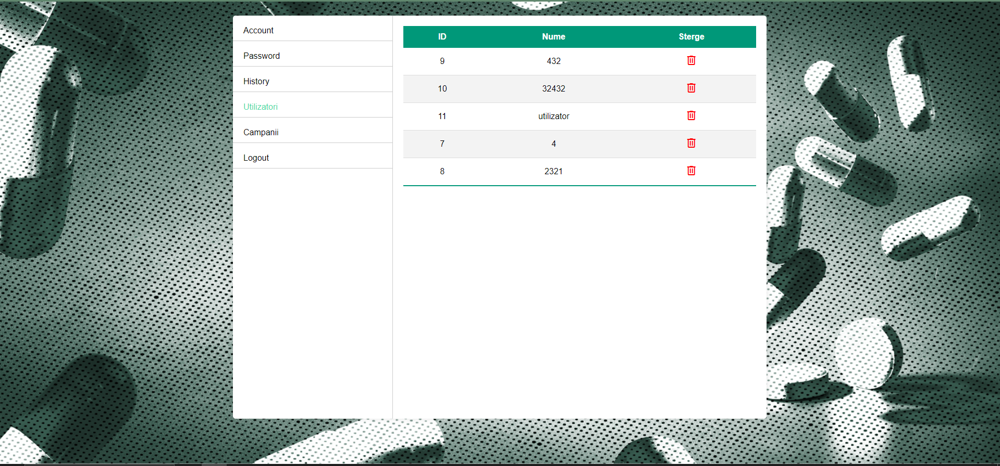
- Secțiunea Campanii este destinată adminului, și aceasta permite adminului să adauge sau să elimine campanii.În momentul în care adminul creează o campanie informațiile referitoare la conținutul campaniei (titlul și articolul) sunt salvate în baza de date, pe când imaginea de profil a campaniei este salvată in cloud aws.De asemenea, acesta are posibilitatea de a șterge campanii, selectând o campanie din secțiunea Alege un articol și apăsând pe butonul de Sterge.Informațiile despre campania respectivă sunt eliminate din baza de date respectiv din cloud.
- 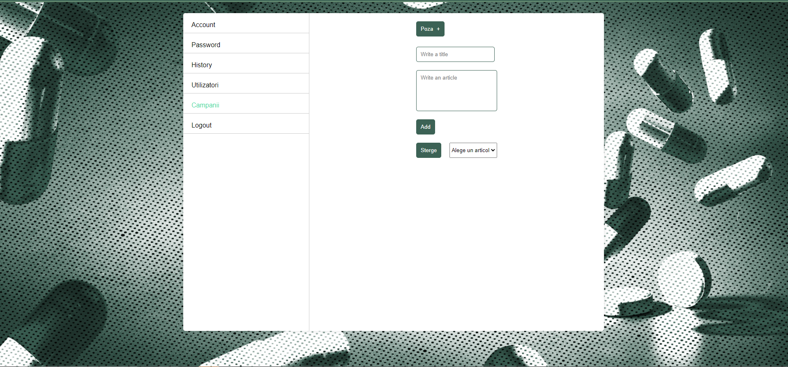
- Secțiunea de Logout are rolul de a deconecta utilizatorul de pe cont, și îl redirecționează către pagina de autentificare, ștergând tokenul din local storage.
- Pagina aceasta are rolul de reprezenta eroarea 404 not found, având tematica RoDX
- 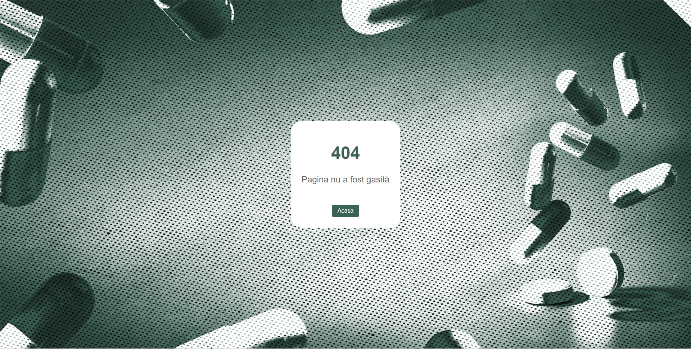
3.2 Interfața Hardware
Acest produs nu necesită interfețe hardware, funcționând pe orice platformă (calculatoare, laptopuri, telefoane etc.) care are instalat un browser.
3.3 Interfața Software
Cerințele minime de software includ un browser funcțional, compatibil cu HTML5 și cu JavaScript.
Postgres Database
Aceasta reprezinta baza de date în care stocam informații despre fiecare utilizator și campanie.De asemenea baza de date stochează informațiile referitoare la statisticile despre droguri din România care sunt folosite pentru ilustrarea grafică, dar și pentru a putea fi exportate.AWS-SDK
Pentru a asigura calitatea înaltă și procesarea rapidă a datelor media ale utilizatorilor noștri, utilizăm serviciul de stocare în cloud AWS, care este open source și ne permite să încărcăm fotografiile pentru campanii și să le păstrăm acolo.3.4 Interfața de comunicare
Aplicația necesită o conexiune la internet. Standardul de comunicare care va fi utilizat este HTTP.
4. Caracteristici ale sistemului
4.1 Gestionarea contului
4.1.1 Descriere și generalități
Un utilizator se poate înregistra alegându-și un nume de utilizator, un email și o parolă.Acesta se poate autentifica având nevoie doar de email și de o parolă.Utilizatorul are posibilitatea în timp ce este autentificat să-și modifice credențialele de la cont dacă dorește acest lucru. Aceata este o funcționalitate cu o prioritate ridicată a aplicației.4.1.2 Actualizarea informațiilor
- În momentul în care un utilizator nou este creat, credențialele acestuia sunt introduse în baza de date.De asemenea, când utilizatorul decide să-și modifice credențialele, noile valori sunt și ele actualizate în baza de date.
4.1.3 Condiții de funcționare
- Pentru a-și modifica credențialele utilizatorul trebuie să fie autentificat.
- Pentru a se autentifica utilizatorul are nevoie de un cont care este înregistrat în baza de date.
4.2 Secțiunea de History
4.2.1 Descriere și generalități
În secțiunea de History utilizatorul poate să-și vizualize filtrele pe care le-a ales ca fiind preferate în urma selectării butonului Preferate din cadrul paginii Căutare și filtrare.De asemenea, acesta are posibilitatea de a elimina filtre din History dacă dorește prin apăsarea butonului de ștergere din dreptul fiecărui filtru. Aceata este o funcționalitate cu o prioritate medie a aplicației.4.2.2 Actualizare informațiilor
- Fiecare combinație de filtre este salvată de utilizator ca și "preferată" este stocată în baza de date.
- La apasărea butonului de ștergere care se află în dreptul fiecărui filtru ales de utilizator ca și "preferat" combinația respectivă de filtre este eliminată din baza de date.
4.2.3 Condiții de funcționare
- Utilizatorul trebuie să fie autentificat.
4.3 Secțiunea de utilizatori
4.3.1 Descriere și generalități
Secțiunea Utilizatori este destinată adminului, și aceasta îi oferă posibilitatea de a vizualiza o listă cu toți utilizatorii din baza de date.De asemenea, acesta are posibilitatea de a elimina utilizatori din baza de date dacă dorește acest lucru. Aceasta este o funcționalitate cu o prioritate medie a aplicației.4.3.2 Actualizarea informațiilor
- La apăsarea butonului de ștergere din dreptul fiecărui utilizator credențialele utilizatorului care a fost selectat să fie eliminat sunt șterse din baza de date.
4.3.3 Condiții de funcționare
- Utilizatorul trebuie să fie autentificat.
- Utilizatorul trebuie să dețină drepturi de admin.
4.4 Secțiunea Campanii
4.4.1 Descriere și generalități
Secțiunea Campanii este destinată adminului, și aceasta permite adminului să adauge sau să elimine campanii.În momentul în care adminul creează o campanie informațiile referitoare la conținutul campaniei (titlul și articolul) sunt salvate în baza de date, pe când imaginea de profil a campaniei este salvată in cloud aws.De asemenea, acesta are posibilitatea de a șterge campanii, selectând o campanie din secțiunea Alege un articol și apăsând pe butonul Sterge.Informațiile despre campania respectivă sunt eliminate din baza de date respectiv cloud. Aceata este o funcționalitate cu o prioritate medie a aplicației.4.4.2 Actualizare informațiilor
- În momentul în care adminul adaugă o campanie nouă, informațiile despre acestea sunt inserate în baza de date.
- În momentul în care adminul șterge o campanie, informațiile despre acestea sunt eliminate din baza de date.
4.4.3 Condiții de funcționare
- Utilizatorul trebuie să fie autentificat.
- Utilizatorul trebuie să dețină drepturi de admin.
4.5 Secțiunea de Logout
4.5.1 Descriere și generalități
Secțiunea de Logout are rolul de a deconecta utilizatorul de pe cont, și îl redirecționează către pagina de autentificare, eliminând tokenul din local storage.4.5.2 Actualizare informațiilor
- Tokenul de autentificare este scos din local storage.
4.5.3 Condiții de funcționare
- Utilizatorul trebuie să fie autentificat.
4.6 Filtrarea și exportarea datelor.
4.6.1 Descriere și generalități
În momentul în care un utilizator selectează un Tip, acestuia îi sunt generate 3 categorii de filtre, Infracțiuni, Confiscări și Urgențe medicale. După ce una distre aceste 3 categorii este selectată ne sunt generate mai multe câmpuri care reprezintă sub-categorii a categoriei principale, pe care utilizatorul le poate completa după nevoile sale După ce utilizatorul a completat toate campurile, acesta are posibilitatea de a alege din 3 metode de reprezentare grafică Bar, Pie și Line. La final după apasarea butonului Caută, pe ecran sunt afișate următoarele componente, diagrama care conține informații bazate pe filtrele selectate de utilizator, și butoanele Preferate care are rolul de a salva combinația de filtre în contul utilizatorului în secțiunea History din pagina MyAccount și butonul Export care are rolul de exporta diagramele în 3 formate, PNG, SVG și CSV. Aceata este o funcționalitate cu o prioritate ridicată a aplicației.4.6.2 Actualizarea informațiilor
- Pe baza filtrelor selectate de utilizator, sunt extrase informațiile din baza de date si exportate pe ecran sub forma unei diagrame.
4.6.3 Condiții de funcționare
- Pentru a selecta un filtru preferat utilizatorul trebuie să fie autentificat.
4.7 Alte funcționalități
4.7.1 Descriere și generalități
In cadrul feed-ului RSS pot fi vizualizate ultimele campanii publicate. Aceasta este o funcționalitate cu o prioritate scăzută a aplicației.4.7.2 Actualizarea informațiilor
- Pe baza campaniilor existente sunt extrase din baza de date și exportate pe ecran pe baza unui XML.
4.7.3 Cerințe de funcționare
- Utilizatorul trebuie să fie autentificat.
- Utilizatorul trebuie să dețină un rol de admin.
5. Funcționalități pentru protecție și securitate
5.1 Protecția datelor
Aplicația va asigura confidențialitatea datelor privind filtrele salvate de fiecare utilizator și campaniilor adăugate de admin.
5.2 Securizarea datelor
Conturile utilizatorilor sunt protejate printr-un sistem de autentificare care utilizează criptarea parolelor și tokenurile de acces, în scopul menținerii confidențialității și securității datelor lor. Alte măsuri de securitate care sunt implementate includ prevenirea atacurilor de tip SQL-injection și blocarea cererilor multiple consecutive din partea unui utilizator pentru a preveni încetinirea aplicației. Aceste măsuri asigură că informațiile utilizatorilor sunt protejate și că aplicația rămâne securizată împotriva amenințărilor potențiale.
5.3 Calitățile Software
- Adaptabilitate
- Ușurință în utilizare
- Fiabilitate
- Flexibilitate
- Maintenabilitate